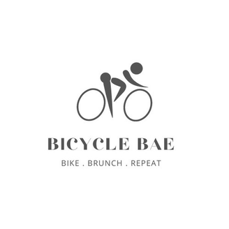
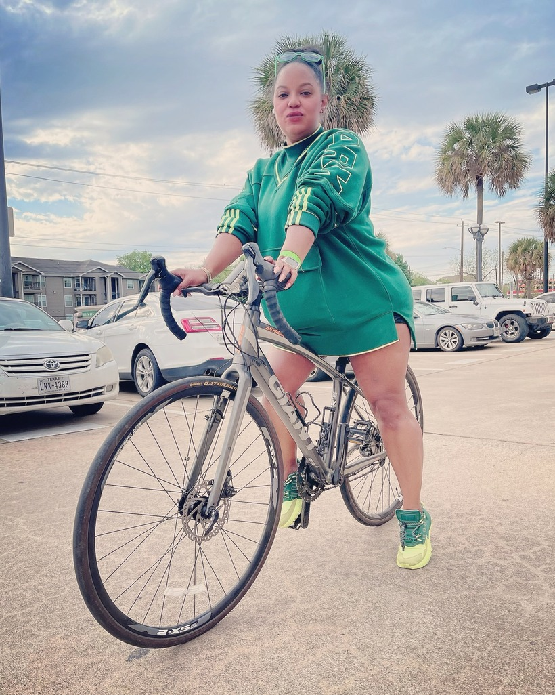
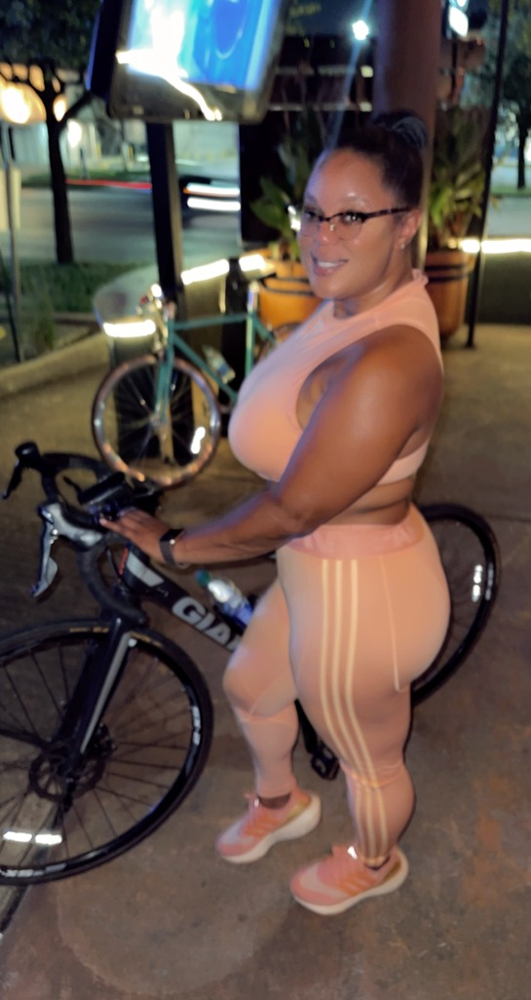
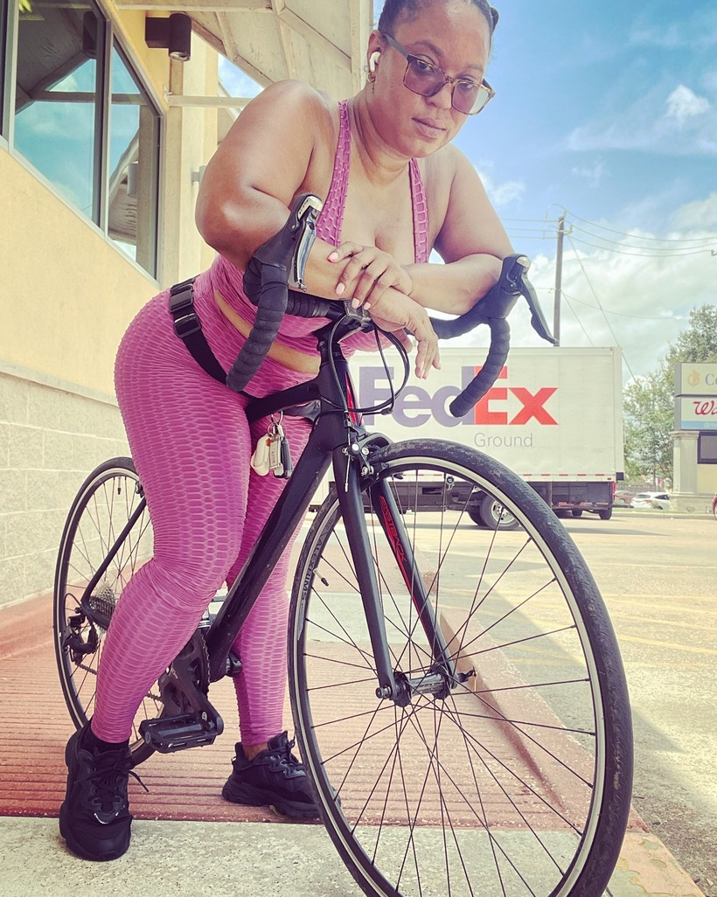

Cycling
Life on Two Wheels
Bicycle Bae
Why I Love Cycling
Cycling became more than exercise for me. It is freedom, fresh air, movement and a chance to clear my mind. There is something about getting on a bike and simply riding that makes me feel strong, grounded and present. It has taken me through different places, different seasons of life and into a community built around movement, connection and fun. Bicycle Bae grew out of that love for cycling and the lifestyle around it: getting outside, showing up for yourself, enjoying the ride and sometimes making brunch part of the destination.




